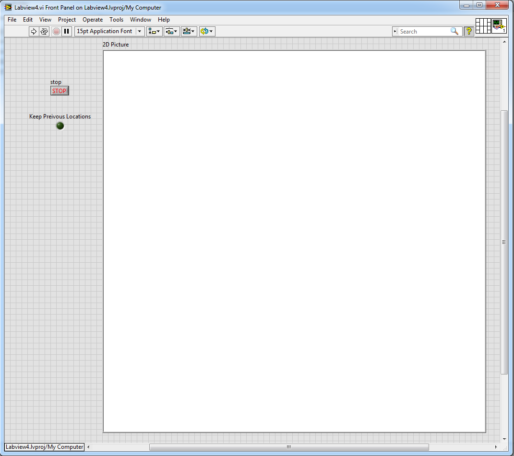
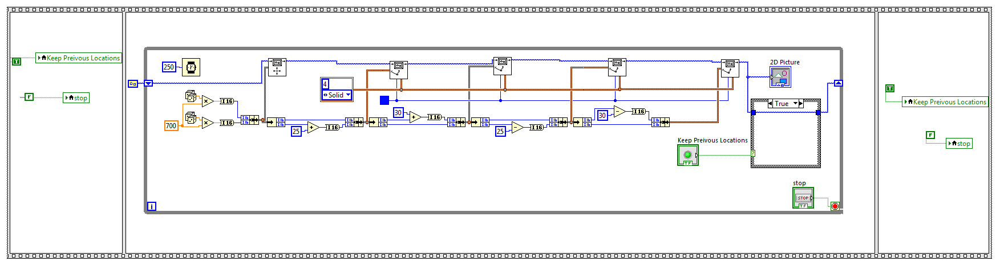
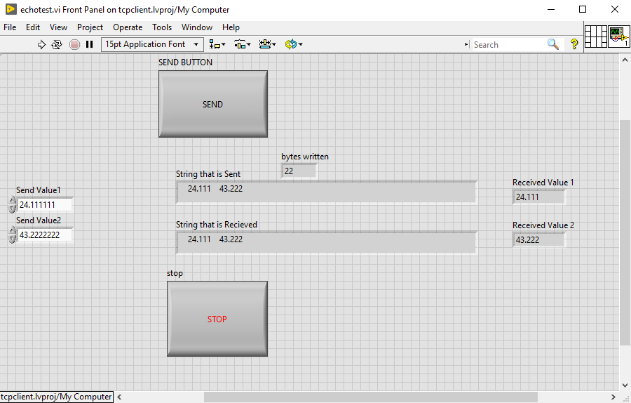
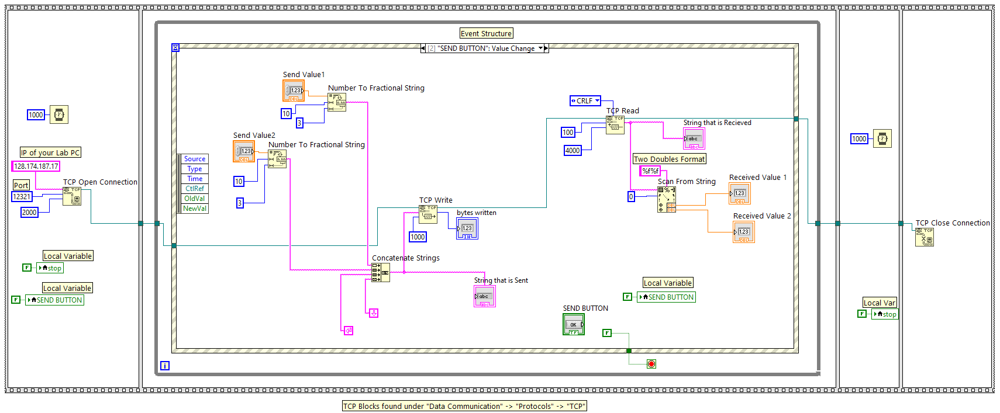

SE 423 Mechatronics
LabVIEW Assignment #2
Due By 5PM Thursday, February 26
Note: There are a lot of small blocks in the LabVIEW code I give you below for Exercises 1 and 2. I have found that if you open the Word document, you can zoom in on the code pictures better than in the PDF file.
First, watch these two YouTube videos about shift registers (or find other tutorials online).
For this assignment, we will start working with the 2D Picture block in LabVIEW. After performing this exercise, you could, for example, use what you learn to create a 2D pictured environment for your robot and draw where the robot is located in this environment. Below is the LabVIEW program I would like you to reproduce for this assignment. It shows you how to draw lines in a 2D Picture. Each time through the while loop, it generates a random number between 0 and 1 and draws a 25-pixel-by-30-pixel rectangle (of course, this could have been done more easily by using the Draw Rectangle block, but I wanted to show how to combine multiple draw commands). Then a shift register is used to keep track of all the lines printed in the 2D Picture as long as the Boolean LED is true. If you click the Boolean LED to make it false, the lines drawn in the previous loops should not be printed to the 2D Picture.
If your screen is large enough, set the 2D Picture to 800 × 800 pixels.
Location of the blocks that may be new to you for this assignment:
From the Front Panel:
From the block diagram:

 For this exercise, I want to give you an introduction to communicating with and from LabVIEW using the TCP
Ethernet protocol. The goal of the VI is to take two double-precision numbers and combine them into a
single string. This string is then sent to an Echo Server with the “TCP Write” command. (Matlab has a
nice, simple Echo Server that we are going to use.) Then the Echo Server echoes the exact string back. We
receive this string with the “TCP Read” command and assume it is different information from what we just
sent. We use the “Scan From String” command to pull the two real numbers out of the string and display
them.
Copy this VI and demonstrate it working. The first time you try to write data across a TCP socket from an
application, the Windows Firewall will pop up with dialogs asking for permissions. Make sure to “check” all boxes in
those pop-up windows, allowing public and private networks. Because we are using this echo server, you may
find it easier to run this LabVIEW application on the lab PCs rather than on your laptop, even if you
have MATLAB installed on your laptop. If you have things to do on your laptop, give the lab PCs a try.
You will need to find your computer’s IP address. The easiest way is to run “ Then, before running the LabVIEW application, open MATLAB and type the command “ Location of blocks you may not have used for the Block Diagram view:   Exercise 2: TCP Ethernet protocol
ipconfig” from a command
prompt. Make sure to find the IP of the primary Ethernet connection. On the lab PCs, it is usually the first
one listed. This is the IPv4 address you will type into the text box, entering the “TCP Open Connection”
block.
echotcpip("n”,12321)”.
12321 is the port the echo server will listen on. Later, if you want to turn off the echo server, type the command
“echotcpip("ff”)” to turn off the server. Once the echo server is running in MATLAB, you can run your LabVIEW
application. Type in some real numbers into the two Send Values and then click “SEND”. Play with different
numbers and see that you get the exact numbers back. When you are done, you can click the “STOP”
button.